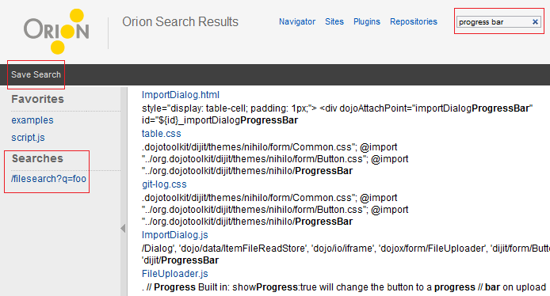

The Search Results page displays matches for any search performed in the search entry field in the title area of any page. Each search result includes a link to the file, and a snippet of the first matching portion of the text. This is a natural language search, so searching for "progress bar" will also find similar terms such as "ProgressBar", and words with the same common root ("progressive", "bars", etc).
Click Save Search in the tool bar to bookmark a link to this search for future use. Note that this is a bookmark to the search, rather than a specific search result. Clicking a link in the Searches list of the Favorites panel will perform a new search with the same search terms.

This document is maintained in a collaborative wiki. If you wish to update or modify this document please visit http://wiki.eclipse.org/Orion/Documentation/User_Guide/Reference/Search_Results_page